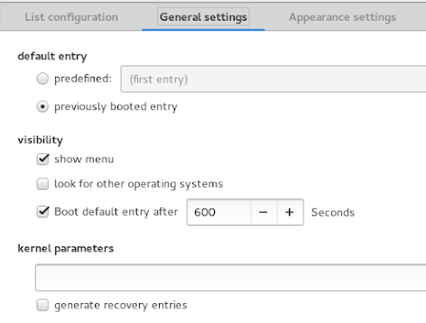
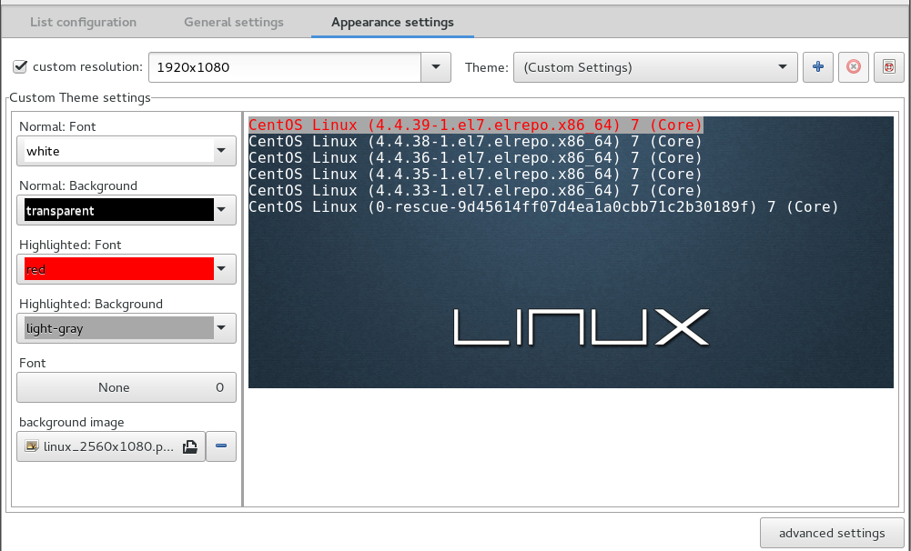
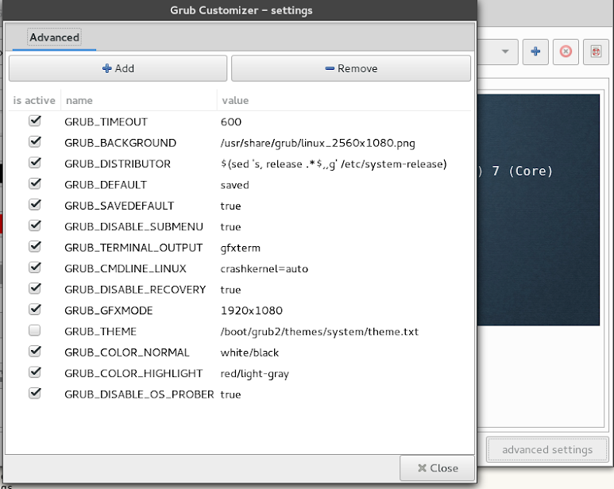

Grub supports background (RGB 8bit) image via GFXMODE
When processing an image in Gimp, set image to RGB 8bit=256 colors via Image->Mode->Indexed and then Export-> as .png
For my big screen, download an image 2560x1080, 21:9 aspect ratio
su cd /usr/share/grub wget https://sites.google.com/site/grayasm/grub/linux_2560x1080.png chown root:root linux_2560x1080.png chmod 644 linux_2560x1080.png chcon -u system_u -t usr_t linux_2560x1080.png
Setup grub default parameters
cat /etc/default/grub GRUB_TIMEOUT="600" GRUB_BACKGROUND="/usr/share/grub/linux_2560x1080.png" GRUB_DISTRIBUTOR="$(sed 's, release .*$,,g' /etc/system-release)" GRUB_DEFAULT="saved" GRUB_SAVEDEFAULT="true" GRUB_DISABLE_SUBMENU="true" GRUB_TERMINAL_OUTPUT="gfxterm" GRUB_CMDLINE_LINUX="crashkernel=auto" GRUB_DISABLE_RECOVERY="true" GRUB_GFXMODE="1920x1080" export GRUB_COLOR_NORMAL="light-gray/black" export GRUB_COLOR_HIGHLIGHT="magenta/black" GRUB_DISABLE_OS_PROBER="true"
To edit grub in UI via grub-customizer
yum install grub-customizer grub-customizer
Kernel option to boot
Grub background image
All options in the advanced tab

Menu Save option would be equivalent with grub2-mkconfig
Save grug configuration
grub2-mkconfig -o /boot/grub2/grub.cfg